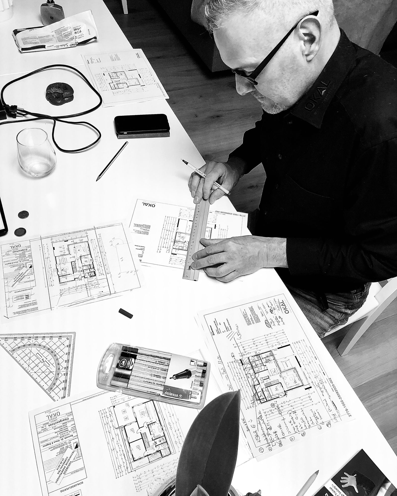

Veille IA
Avec les agents de codage IA, la spécification redevient la référence, formalisée par la méthodologie SDD (Spec-Driven Development). Voici quelques impacts pour les projets data.

Le Spec-Driven Development (SDD) inverse le rapport habituel : c'est la spec qui fait foi, et le code en découle.
S'il est bien briefé et s'il a du contexte, un agent de codage IA est capable de livrer rapidement du code fiable, et de créer de la valeur ajoutée. Toutefois :
Le Spec-Driven Development s'appuie sur un cycle de mise en œuvre en plusieurs étapes, de la spécification jusqu'à l'implémentation. Pour en détailler le fonctionnement, les deux sources en fin d'article sont plus complètes.
Source principale
C'est le guide le plus complet et le plus concret : définition, cycle en quatre étapes, outils, limites.
Lire la sourcePour approfondir
Il propose trois niveaux de rigueur (spec-first, spec-anchored, spec-as-source) et un cadre pour décider quand l'approche vaut la peine.
Lire la source